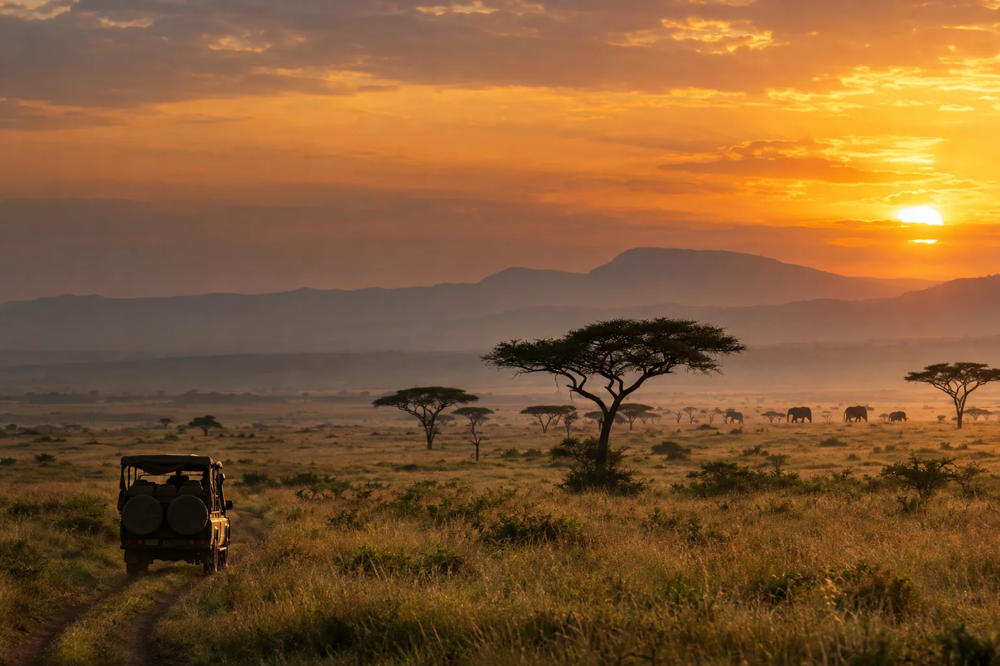

Reiseidee im Fokus
Tansania & Kenia aus der Luft
Eine 11-tägige Flugsafari durch Serengeti, Ngorongoro und Masai Mara – mit ausgewählten Lodges als Ausgangspunkt für die individuelle Beratung.
Flugsafari ansehen ↗
Afrika · individuell und privat geführt
Das erste Licht in der Savanne, ein stiller Abend im Camp, Landschaften von großer Weite. Wir planen Ihre Afrikareise mit Sinn für den Ort, die Jahreszeit und Ihren persönlichen Rhythmus.
Ein Morgen in der Serengeti, die Stille der Namib oder der Blick auf die Victoriafälle: Auf einer individuell geplanten Reise erleben Sie Afrika in Ihrem eigenen Tempo. Welche Orte, Unterkünfte und Begegnungen zu Ihnen passen, finden wir gemeinsam heraus.
Ihr Reisemanufaktur-Berater verbindet eigene Zielgebietserfahrung mit Ihren Vorstellungen. Gemeinsam stimmen Sie Route, Lodges, Reiseleitung und Transfers ab – so, dass die einzelnen Etappen sinnvoll ineinandergreifen.
Ausgewählte Reiseinspiration
Entdecken Sie ausgewählte Reiseideen und einen Fantrip aus erster Hand – jede Route wird individuell auf Sie abgestimmt.
Eine 11-tägige Flugsafari durch Serengeti, Ngorongoro und Masai Mara – mit ausgewählten Lodges als Ausgangspunkt für die individuelle Beratung.
Flugsafari ansehen ↗
Eine Mietwagenreise mit weitem Landschaftserleben und Nächten unter dem namibischen Sternenhimmel – Route und Aufenthalte individuell abstimmen.
Namibia-Reise ansehen ↗
Die Franziska berichtet von ihrer persönlichen Reise entlang der Garden Route – mit Safari-Erlebnissen, Küsten und ausgewählten Lodges.
Reisebericht lesen ↗
Ihre Reise, persönlich begleitet
Ihr privater Reiseleiter schafft Freiraum für individuelle Entdeckungen. Wir planen Ihre Route mit Sorgfalt, wählen passende Unterkünfte und sind vor, während und nach der Reise für Sie da.
Unsere ArbeitsweiseDie Afrika-Reisemanufaktur
Ihre Interessen geben die Richtung vor. Unsere Zielgebietskenntnis verbindet sie zu einer stimmigen Route.
01
Unsere Reisemanufaktur-Berater kennen die Destinationen und überprüfen die Qualität ausgewählter Partner vor Ort.
02
Ein fester Reisemanufaktur-Berater begleitet Sie von der ersten Planung bis zurück nach Hause und bleibt auch während Ihrer Reise erreichbar.
03
Privater Guide, eigener Chauffeur und sorgfältig ausgewählte Unterkünfte – abgestimmt auf Ihren Rhythmus und Ihre Vorstellungen.
KI-getriebene Reisebegleitung
Persönlich bei AST anfragenKI-Assistenz mit Reisekontext, Flug-Cockpit, AR-Orientierung und Connectivity: Connector+ verbindet digitale Werkzeuge mit persönlicher Betreuung. Die ausführliche Produktseite zeigt Funktionen, Technologie und konkrete Nutzungsszenarien.
ARIA ist als Wissens- und Serviceanbindung vorgesehen. Welche Module und Datenquellen für Ihre Reise verfügbar sind, stimmen wir persönlich mit Ihnen ab.
Die Technik hinter Ihrer Reise ↗Kundenstimmen
„Rundum eine gelungene Reise. Vielen, vielen Dank für die sehr gute Vorbereitung.“
Hellbarth-Busch · Ägypten-Reise · 12.01.2026
Originale Kundenstimme ansehen ↗„Vom ersten Kontakt bis zur Rückkehr hat wirklich alles reibungslos geklappt.“
Michael Reymann · Südafrika-Reise · 03.12.2025
Originale Kundenstimme ansehen ↗Reisemanufaktur-Wissen · Afrika
Afrika-Reisen verbinden oft große Landschaften und unterschiedliche Transportarten. Eine gute Planung denkt nicht nur an Highlights, sondern auch an Fahrzeiten, Aufenthaltsdauer und Pausen.
01
Bei Safaris prägen Tagesrhythmus, Lage der Unterkunft und geplante Nächte das Erlebnis. Weniger Wechsel können mehr Zeit für Pirschfahrten und Erholung lassen.
02
Kilometer sagen wenig über die tatsächliche Fahrtdauer aus. Straßenverhältnisse, Grenzübertritte und regionale Abläufe sollten bei der Routenfolge berücksichtigt werden.
03
Kleinflugzeuge können lange Überlandstrecken verkürzen. Gepäckgrenzen und Transfers sind je Anbieter unterschiedlich und müssen vor einer konkreten Planung geprüft werden.
Demo-Redaktion: Diese Expertise-Beispiele und zusätzlichen FAQ-Antworten sind illustrative Entwürfe. Zielgebietssaison, Tierbeobachtungen, Gepäckgrenzen, Zugänge und betriebliche Aussagen vor Veröffentlichung fachlich prüfen und freigeben.
Gut zu wissen
Von der Reiseidee bis zur Auswahl des richtigen Safari-Rhythmus.
Das hängt von Schutzgebiet, Anreise und gewünschtem Tempo ab. Mehrere Nächte an einem Ort können Transfers reduzieren und Zeit für unterschiedliche Tageszeiten lassen. Eine konkrete Empfehlung richtet sich nach Route und Verfügbarkeit.
Beobachtungen in freier Natur lassen sich nicht garantieren. Jahreszeit, Niederschlag, Wasserstellen und Tierwanderungen variieren je Region. Die Reisezeit sollte mit aktuellen Informationen des konkreten Gebiets geplant werden.
Prüfen Sie vor der Buchung die Gepäckvorgaben kleiner Flugzeuge, zulässige Taschenarten, Transfers und mögliche Wetterabhängigkeit. Die Regeln unterscheiden sich nach Strecke und Betreiber und müssen für die konkrete Reise bestätigt werden.
Eine Kombination kann passen, wenn Flugverbindungen, Saison und verfügbare Reisetage zusammenpassen. Zusätzliche Ortswechsel brauchen Zeitpuffer; konkrete Verbindungen und Leistungen sind vor Angebotserstellung zu prüfen.
Die Reisekatalog-Einträge zeigen veröffentlichte Reiseideen und Reiseverläufe. Sie sind Ausgangspunkte, keine festen Gruppenprogramme. Route, Reisedauer, private Reiseleitung, Unterkünfte und weitere Leistungen stimmen wir mit Ihnen ab.
Unsere Reisemanufaktur-Berater bereisen ihre Zielgebiete, bilden sich regelmäßig weiter und prüfen Partner vor Ort. So können wir bei der Planung auf konkrete Fragen zu Lodges, Distanzen und Reiseabläufen eingehen.
Die individuelle Fernreiseplanung beginnt in der Regel bei 5.000 € Gesamtbudget pro Person einschließlich internationaler Flüge. Preis und Leistungen richten sich unter anderem nach Reisezeit, Route, Unterkünften und gewünschtem Komfort. Für Budgets darunter führt unser Formular zu passenden Europa-Reiseideen – ohne Ihre persönlichen Angaben zu übertragen.
Ja. Der Katalog enthält neben Safari- und Rundreiseideen auch Kombinationen mit Erholung und Inselaufenthalten. Welche Verbindung sinnvoll ist, hängt von Reisedauer, Saison, gewünschtem Tempo und Verfügbarkeit ab.
Die auf dieser Seite zitierten Rückmeldungen stammen aus den veröffentlichten Kundenstimmen zu Ägypten- und Südafrika-Reisen. Die Zitate geben individuelle Erfahrungen wieder und sind keine Garantie für identische Abläufe oder Leistungen bei anderen Reisen.
Der erste Schritt
Reisezeit, Interessen und Budget geben uns eine erste Orientierung für das persönliche Gespräch.
Entscheidungshilfen
Alle verfügbaren Reiseideen mit ausführlichen Verläufen in dieser Demo – ohne Wechsel auf die bisherigen Länder-Websites.